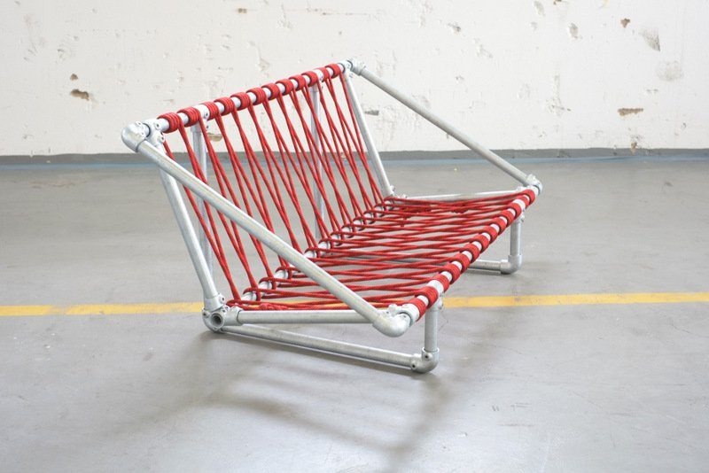

benches
^ Projects infobox ^^
| image | Bench.scad.png |
| designers | [[user:dinosaur|Mikey]], [[user:tim|Timothy Schmidt]] |
| date | 2021 |
| vitamins | |
| materials | |
| transformations | |
| lifecycles | |
| tools | [[wrenches|Wrenches]] |
| parts | [[frames|Frames]], [[nuts|Nuts]], [[bolts|Bolts]], [[end_caps|End caps]], [[plates|Plates]] |
| techniques | [[tri_joints|Tri joints]], [[shelf_joints|Shelf joints]] |
| git | |
| files | |
| suppliers | |
Introduction
A bench is a long seat on which multiple people may sit at the same time. Benches are typically made of wood, but may also be made of metal, stone, or synthetic materials. Many benches have arm and back rests; some have no back rest and can be sat on from either side. Benches are used both outdoors and indoors.
Challenges
Build a bench or couch from Replimat components. Couches are highly personal objects, often customized to suit a particular purpose.
Approaches

<youtube>7wvL-mr0bDI</youtube>
<youtube>quUaTM49NR8</youtube>